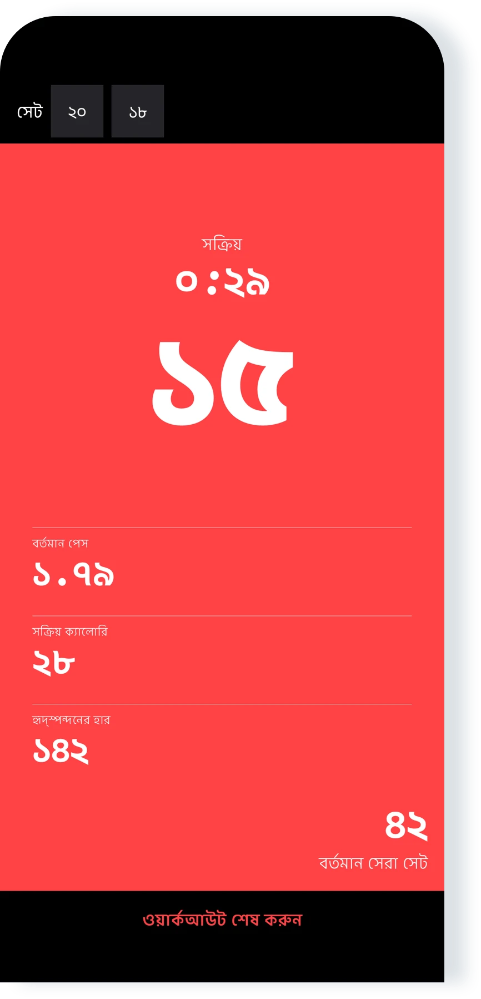
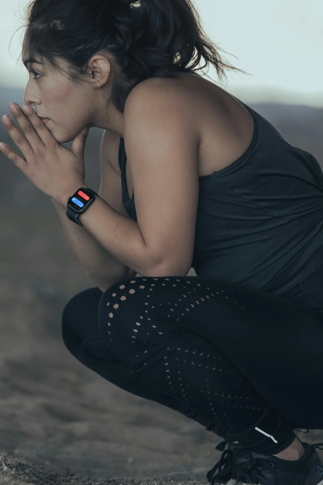

দারুণ অ্যাপ
“অ্যাপটি আমার সত্যিই খুব ভালো লাগে। এর সরলতাই একে সেরা করে তুলেছে!”
iPhone, iPad ও Apple Watch-এর জন্য পুশ-আপ অনুশীলন
প্রোগ্রাম অনুসরণ করুন অথবা নিজের মতো অনুশীলন করুন। Pushanova iPhone, iPad ও Apple Watch-এ আপনার পুশ-আপ গুনে রাখে।
বিনামূল্যে শুরু করুন। অ্যাকাউন্ট নেই। বিজ্ঞাপন নেই।

প্রোগ্রামটিতে ৫০টি লেভেল আছে। যেকোনো লেভেল থেকে শুরু করুন, অথবা নিজের মতো অনুশীলন করে নিজের সেট বেছে নিন। কার্ডিও বা শক্তিবর্ধক অনুশীলনের সময়ও পুশ-আপের সেট রেকর্ড করতে পারেন।
Pushanova-তে দৈনিক বা সাপ্তাহিক কোনো বাধ্যতামূলক সময়সূচি নেই। একটি লেভেল আবার করতে পারেন এবং বিশ্রামের দিন নিতে পারেন—বিরতি নিলেও কোনো সমস্যা নেই।

আপনার iPhone বা iPad মেঝেতে রাখুন, অথবা Apple Watch-এ শুরু করুন। একটি ছোট কাউন্টডাউন আপনাকে অবস্থান নেওয়ার সময় দেয়।
Pushanova স্বয়ংক্রিয়ভাবে আপনার পুশ-আপ গোনে এবং সেট, গতি, সময় ও ক্যালরি রেকর্ড করে। কতক্ষণ বিশ্রাম নেবেন, তা আপনি ঠিক করেন—চাইলে আগে চালিয়ে যান, কিংবা আরও বেশি বিশ্রাম নিন।
কাছাকাছি iPhone না থাকলেও Apple Watch-এ ওয়ার্কআউট শুরু ও শেষ করুন। একসঙ্গে ব্যবহার করলে Apple Watch গোনে আর iPhone-এ একই ওয়ার্কআউট দেখা যায়।
Pushanova সম্পন্ন প্রতিটি ওয়ার্কআউট সংরক্ষণ করে। সময়ের সঙ্গে আপনার অনুশীলন কীভাবে বদলেছে, তা ইতিহাসে দেখা যায়।

“অ্যাপটি আমার সত্যিই খুব ভালো লাগে। এর সরলতাই একে সেরা করে তুলেছে!”
“এটি চমৎকার। এটি আমাকে আরও বেশি পুশ-আপ করতে সাহায্য করে এবং উন্নতি চালিয়ে যেতে উৎসাহ দেয়।”
“আমি এখন অনেক পুশ-আপ করতে পারি! এটি লিখেছে আমাদের ১৩ বছর বয়সী ছেলে, যে এই অ্যাপ থেকে অনেক উৎসাহ পেয়েছে।”
“অ্যাপটি আমার খুবই পছন্দ। সম্প্রতি ঠিক করেছিলাম, কত দ্রুত ১০০টি পুশ-আপ পর্যন্ত পৌঁছাতে পারি তা দেখব। সাশ্রয়ী দামে এত সহজে কাজটি করতে সাহায্য করে এমন কোনো অ্যাপ এটি পাওয়ার আগে খুঁজে পাইনি। অ্যাপটির পরিচ্ছন্ন নকশা আমার খুব ভালো লাগে। ডেভেলপারও মতামতের দ্রুত জবাব দেন।”
দৈর্ঘ্য ও স্পষ্টতার জন্য App Store-এর পর্যালোচনাগুলো সামান্য সম্পাদনা করা হয়েছে।
iPhone ও iPad-এ পুশ-আপ ট্র্যাক করার সময় ছবি তোলা হয় না এবং ভিডিও রেকর্ড, সংরক্ষণ বা আপলোড করা হয় না। Pushanova আপনাকে শনাক্ত করতে ক্যামেরা ব্যবহার করে না।
Pushanova-তে কোনো অ্যাকাউন্ট লাগে না, এটি আপনার তথ্য বিক্রি করে না এবং এতে বিজ্ঞাপন নেই। সিঙ্ক চালু থাকলে ওয়ার্কআউটের তথ্য আপনার ডিভাইস ও ব্যক্তিগত iCloud অ্যাকাউন্টে থাকে। আপনার অনুমতি নিয়ে সম্পন্ন ওয়ার্কআউট Apple Health-এ সংরক্ষণ করা যায়।
Pushanova বন্ধ হয়ে গেলে বা বাধাগ্রস্ত হলে চলমান ওয়ার্কআউট ফিরিয়ে আনা যায়।
না। Pushanova iPhone বা iPad দিয়ে পুশ-আপ ট্র্যাক করতে পারে। Apple Watch কবজির নড়াচড়া দিয়ে ট্র্যাক করার সুবিধা যোগ করে এবং বেঞ্চ ও অনুভূমিক বারে উঁচু অবস্থান থেকে পুশ-আপ সমর্থন করে।
হ্যাঁ। iPhone কাছাকাছি না থাকলেও Apple Watch-এ ওয়ার্কআউট শুরু ও সম্পন্ন করতে পারেন। Watch অ্যাপটি ওয়ার্কআউটের ওপর কেন্দ্রীভূত। ওয়ার্কআউটের ইতিহাস ও বিশ্লেষণ iPhone ও iPad-এ পাওয়া যায়।
Apple Watch ও iPhone একসঙ্গে ব্যবহার করলে Apple Watch আপনার পুশ-আপ ট্র্যাক করতে পারে, আর iPhone-এ সিঙ্ক হওয়া ওয়ার্কআউট দেখা যায়।
iPhone ও iPad-এ সামনের ক্যামেরা আপনার মুখ ও ডিভাইসের মধ্যকার দূরত্বের পরিবর্তন মাপে। Apple Watch-এ Pushanova আপনার কবজির নড়াচড়া বিশ্লেষণ করে। চাইলে এমন একটি সেটিংও চালু করতে পারেন, যাতে স্ক্রিনে প্রতিবার ট্যাপ করলে ১টি পুশ-আপ গণনা হয়।
হ্যাঁ। ক্যামেরা ব্যবহারের অনুমতি না থাকলে iPhone-এ Pushanova ডিভাইসের অন্য একটি সেন্সর ব্যবহার করতে পারে। iPhone ও iPad—দুটিতেই স্ক্রিনে ট্যাপ করে গণনার সুবিধা চালু করা যায়। Apple Watch ক্যামেরা ব্যবহার করে না।
না। স্বয়ংক্রিয় গণনার সময় ছবি তোলা হয় না এবং ভিডিও রেকর্ড, সংরক্ষণ বা আপলোড করা হয় না। ক্যামেরা শুধু দূরত্ব মাপে, আর Pushanova এটি দিয়ে আপনাকে শনাক্ত করে না।
iPhone ও iPad মেঝেতে সাধারণ পুশ-আপ এবং হাঁটু গেড়ে পুশ-আপ সমর্থন করে। Apple Watch বেঞ্চ বা অনুভূমিক বারে উঁচু অবস্থান থেকে পুশ-আপও সমর্থন করে।
দুই হাতের তালু পরস্পরের মুখোমুখি রেখে সমান্তরাল হ্যান্ডেলে পুশ-আপ সমর্থিত নয়। মুঠোর ওপর পুশ-আপ কাজ করতে পারে, তবে গণনা কম নির্ভুল হতে পারে।
কোনো স্বয়ংক্রিয় ট্র্যাকিং পদ্ধতিই প্রতিটি নড়াচড়া সব সময় সঠিকভাবে গুনতে পারে না। ডিভাইসের অবস্থান, ভঙ্গি ও গতি ফলাফলে প্রভাব ফেলতে পারে। ওয়ার্কআউটের পরে আগে থেকে থাকা প্রতিটি সেটে পুশ-আপের সংখ্যা সংশোধন করতে পারেন।
শুরুর দিকের ছোট সেটের লেভেলগুলো দিয়ে শুরু করতে পারেন। হাঁটু গেড়ে পুশ-আপ সমর্থিত। একটি লেভেল আবার করতে পারেন এবং নিজের গতিতে এগোতে পারেন।
হ্যাঁ। যেকোনো লেভেল থেকে শুরু করতে পারেন অথবা নিজের মতো অনুশীলন করতে পারেন। Pushanova কার্ডিও বা শক্তিবর্ধক অনুশীলনের সময় পুশ-আপের সেট রেকর্ড করতে পারে।
প্রোগ্রামটিতে ৩টি ধাপে ৫০টি লেভেল আছে। প্রতিটি লেভেল আগে থেকে নির্ধারিত সেট ও পুশ-আপের লক্ষ্যসহ একটি সাজানো ওয়ার্কআউট। শেষ লেভেলে ১ সেটে ১০০টি পুশ-আপ রয়েছে।
যেকোনো লেভেল থেকে শুরু করতে, একটি লেভেল আবার করতে বা অন্য লেভেলে যেতে পারেন। প্রথম ১০টি লেভেল বিনামূল্যে। Pushanova Premium লেভেল ১১–৫০ আনলক করে।
হ্যাঁ। ১টি ওয়ার্কআউটে একটি লেভেল সম্পন্ন করতে পারেন এবং অন্যটিতে নিজের মতো অনুশীলন করতে পারেন। একই ওয়ার্কআউটে লেভেল সম্পন্ন করার পরও নিজের মতো অনুশীলন চালিয়ে যেতে পারেন।
হ্যাঁ। Pushanova-তে দৈনিক বা সাপ্তাহিক কোনো বাধ্যতামূলক সময়সূচি নেই। লেভেল আবার করতে, বিশ্রামের দিন নিতে এবং প্রস্তুত হলে প্রোগ্রামে ফিরতে পারেন।
লেভেল ওয়ার্কআউটের সময় Pushanova পরিকল্পিত সেটগুলোর মাঝে ৯০ সেকেন্ড বিশ্রামের পরামর্শ দেয়। চাইলে আগে চালিয়ে যান বা আরও বেশি বিশ্রাম নিন। নিজের মতো অনুশীলনে বিশ্রামের নির্দিষ্ট কোনো লক্ষ্য নেই।
ওয়ার্কআউটের আগে সেটের পূর্বনির্ধারিত ক্রম তৈরি ও সংরক্ষণ করা যায় না। নিজের মতো অনুশীলনের সময় কতটি পুশ-আপ ও সেট করবেন, তা আপনি অনুশীলন করতে করতেই ঠিক করেন, আর Pushanova ওয়ার্কআউটটি রেকর্ড করে।
হ্যাঁ। আপনার অনুমতি নিয়ে Pushanova সম্পন্ন শক্তিবর্ধক ওয়ার্কআউট Apple Health-এ সংরক্ষণ করে; এতে সময়কাল, সক্রিয় ক্যালরি এবং পাওয়া গেলে হৃদ্স্পন্দনের হার থাকে। পুশ-আপ ও সেটের সংখ্যা Apple Health-এ সংরক্ষিত হয় না।
Apple Watch-এ ওয়ার্কআউটের জন্য Apple Health-এর অনুমতি প্রয়োজন। iPhone ও iPad-এ এটি ঐচ্ছিক।
হ্যাঁ। হৃদ্স্পন্দন মাপার কোনো ডিভাইস না থাকলেও Pushanova সক্রিয় ক্যালরি অনুমান করে। হৃদ্স্পন্দনের তথ্য Apple Watch, সামঞ্জস্যপূর্ণ হৃদ্স্পন্দন মাপার ইয়ারবাড বা Bluetooth হৃদ্স্পন্দন মনিটর থেকে আসতে পারে।
সামঞ্জস্যপূর্ণ ইয়ারবাড দিয়ে হৃদ্স্পন্দন শনাক্ত করতে iPhone-এ iOS ২৬ বা পরবর্তী সংস্করণ, কিংবা iPad-এ iPadOS ২৬ বা পরবর্তী সংস্করণ প্রয়োজন।
হ্যাঁ। Pushanova একটি পূর্ণাঙ্গ iPad অ্যাপ, যাতে স্বয়ংক্রিয় গণনা, ১০০ পুশ-আপ প্রোগ্রাম, নিজের মতো অনুশীলনের সুবিধা, ওয়ার্কআউটের ইতিহাস, অগ্রগতি, বিশ্লেষণ ও Apple Health রয়েছে।
হ্যাঁ। ইন্টারনেট সংযোগ ছাড়াই ওয়ার্কআউট শুরু ও সংরক্ষণ করতে পারেন। ডিভাইস আবার অনলাইনে এলে iCloud সিঙ্ক আবার শুরু হয়। App Store থেকে কিনতে ইন্টারনেট সংযোগ প্রয়োজন।
না। Pushanova-তে অ্যাকাউন্ট বা সদস্যপদ লাগে না। ইমেইল ঠিকানা না দিয়ে বা পাসওয়ার্ড তৈরি না করেই অ্যাপটি ব্যবহার করতে পারেন। Pushanova Premium ঐচ্ছিক এবং App Store-এর মাধ্যমে কেনা হয়।
হ্যাঁ। বিনামূল্যের অনুশীলনে আগে থেকে নির্ধারিত লক্ষ্য ছাড়া সীমাহীন ওয়ার্কআউট, প্রথম ১০টি লেভেল এবং iPhone, iPad ও Apple Watch-এ স্বয়ংক্রিয় গণনা রয়েছে। Pushanova-তে কোনো বিজ্ঞাপন নেই।
যোগ্য নতুন গ্রাহকেরা বার্ষিক সাবস্ক্রিপশন ৩ দিন বিনামূল্যে ব্যবহার করে দেখতে পারেন। ট্রায়াল শেষ হওয়ার আগে বাতিল না করলে বার্ষিক সাবস্ক্রিপশনটি স্বয়ংক্রিয়ভাবে শুরু হয়। আজীবনের জন্য এককালীন ক্রয়ে কোনো ট্রায়াল নেই, আর কেনার আগে App Store-এ মূল্য দেখানো হয়।
যতক্ষণ ইচ্ছা নিজের মতো অনুশীলন করতে পারেন। প্রথম ১০টি লেভেল ও স্বয়ংক্রিয় গণনাও বিনামূল্যে। iPhone, iPad বা Apple Watch-এ ওয়ার্কআউট শুরু করুন।

অ্যাকাউন্ট নেই। সাবস্ক্রিপশন বাধ্যতামূলক নয়। বিজ্ঞাপন নেই।
